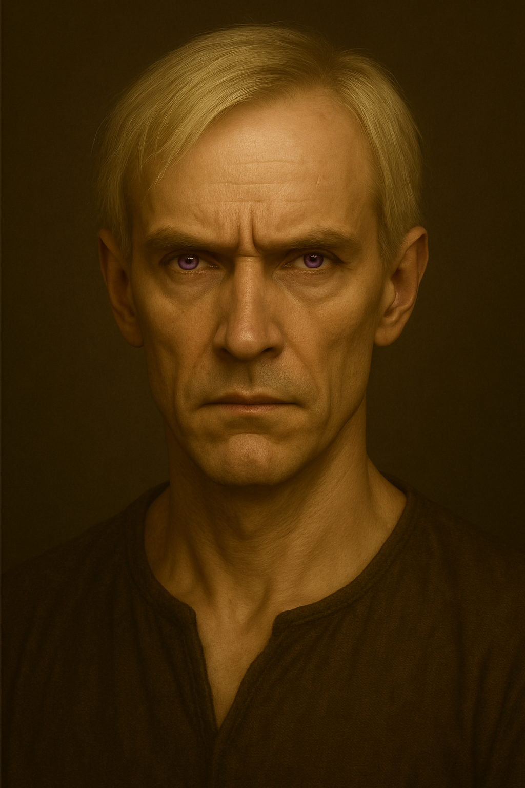
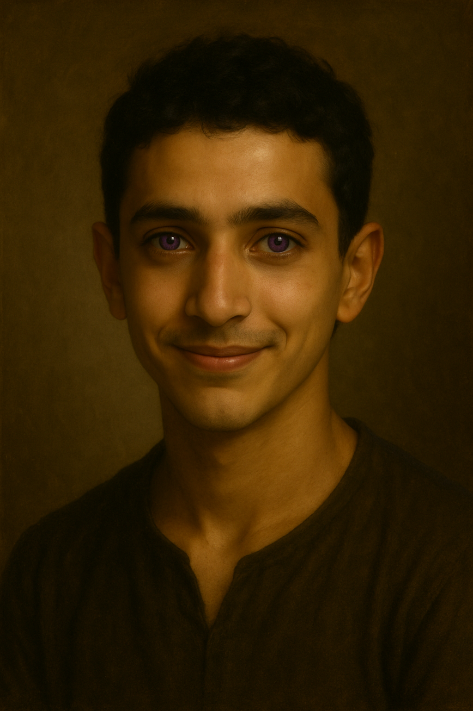

Éléonora-gardienne du clan
Petite de taille, mais immense par sa présence, Éléonora est la Gardienne du Clan de l’Esprit. Sous son chapeau pointu orné de grelots de cristal, avec sa robe de velours prune qui effleure le sol, elle pourrait presque sembler fragile. Mais chaque tintement de ses pas rappelle une vérité implacable : ceux qui la sous-estiment se trompent lourdement.
Depuis la restructuration du clan, Éléonora en est devenue le blason vivant. Sa maîtrise de l’Esprit atteint un sommet que nul autre n’a égalé. Elle n’est pas seulement capable de lire et de lier les pensées : elle a franchi un seuil que la plupart croyaient inaccessible, celui de la communion avec les Esprits des éléments. Certains affirment l’avoir vue maîtriser l’Esprit de l’Eau lui-même, convoquant un ouragan miniature d’une force terrifiante. Légende ou vérité ? Peu osent poser la question à voix haute… mais tous la redoutent un peu plus depuis.
Protectrice et intransigeante, Éléonora veille sur ses élèves comme une mère sévère, prête à tout pour eux. Elle exige une discipline sans faille, car elle sait mieux que quiconque le prix d’un pouvoir mal contrôlé. Sous ses allures singulières de petite femme aux grelots tintants, elle incarne à la fois la rigueur et la puissance, et nul n’ignore que sa détermination est absolue.
Éléonora n’est pas simplement la maîtresse de l’Esprit.
Elle est l’Esprit, dans toute sa splendeur et toute sa terreur.
✦ Clan






Clan de l’Esprit
Clan de l’Esprit
Description
L’Esprit est rare. Et lorsqu’il se manifeste, il s’accompagne presque toujours d’un tempérament façonné par l’ordre et la précision. Ceux qui portent ce don n’aiment ni l’imprévu, ni le désordre. Chaque chose doit être à sa place, chaque action pensée, chaque décision pesée. Dans leur monde, rien n’est laissé au hasard. Leur pouvoir leur permet de lire les pensées, de créer des liens mentaux, d’apaiser ou de troubler une âme. Mais là où d’autres se contenteraient de réagir, eux anticipent. Une simple conversation leur donne assez d’éléments pour prévoir ce qui viendra, et ils bâtissent leurs plans comme d’autres bâtissent des forteresses : solides, réfléchis, sans faille apparente. Dans un groupe, ce sont eux les cerveaux, les architectes de chaque décision. Avant qu’une aventure ne commence, ils ont déjà envisagé cent scénarios, prévu les itinéraires, calculé les ressources, établi un plan B… puis un plan C. Ils avancent avec la certitude que le chaos ne gagne que lorsqu’on le laisse entrer. Calmes en apparence, ils peuvent être intraitables quand l’ordre est menacé. Leur patience n’est pas infinie : dérangez leur équilibre, et vous verrez la fermeté derrière le regard posé. Mais ceux qui savent les suivre découvrent qu’avec un Esprit à leurs côtés, chaque pas, même dans l’inconnu, a déjà été pensé avant d’être franchi. Avoir l’Esprit, c’est porter la responsabilité silencieuse de tout prévoir… et l’angoisse secrète de savoir que, parfois, même le plan parfait peut échouer.
Personnages — Clan de l’Esprit
Professeure Ursule
Professeure de méditation profonde, Ursule semble vivre à moitié dans un autre monde. Son regard flotte constamment, comme si elle méditait même en parlant, et ses élèves se demandent parfois si elle les voit vraiment. Pourtant, dans le Clan de l’Esprit, son rôle est essentiel : la méditation est la base de tout apprentissage, le seul moyen de se recentrer et de canaliser les énergies qui traversent l’esprit.
Ursule incarne parfaitement cette discipline. Elle enseigne la patience, le souffle, l’ancrage… et pousse chacun à chercher la clarté intérieure avant de prétendre manier un pouvoir aussi exigeant. Sa voix douce, ses gestes lents, tout en elle invite au calme et à la concentration.
Mais si son enseignement est précieux, ses compétences en duel laissent à désirer. Trop perchée, trop ancrée dans ses méditations, elle semble parfois déconnectée du présent. On raconte qu’elle a déjà entamé une séance de respiration alors qu’un élève s’attendait à une démonstration offensive.
Reste qu’Ursule est un pilier discret du clan : sans elle, beaucoup d’esprits brillants se perdraient dans leur propre chaos intérieur. Peut-être ne brillera-t-elle jamais sur un champ de bataille, mais dans le silence des salles de méditation, elle est indispensable.
Professeur Yvan
Professeur de concentration, Yvan est un homme maigre aux traits durs, dont les yeux acérés semblent sonder chaque intention. La concentration est une matière essentielle dans la maîtrise de l’Esprit : apprendre à rester focalisé en pleine action est une épreuve redoutable, et Yvan l’incarne à sa manière.
Peu bavard, presque austère, il n’est pas réputé pour sa pédagogie douce, mais pour son exigence et son autorité silencieuse. Il a été nommé en remplacement de l’ancienne professeure de concentration, parti dit-on à Véralis, pour régler un contentieux resté secret.
Si certains doutaient de sa légitimité, Yvan n’a pas eu besoin de longs discours pour s’imposer. Son expérience parle pour lui : selon les rumeurs, il aurait déjà combattu et remporté de grandes batailles. Un passé que peu osent lui demander de raconter, mais qui se devine dans chacun de ses regards.
Maître Beltrano
Maître Beltrano
Professeur de maîtrise des esprits en tout genre, Maître Beltrano est un homme marqué par l’aventure. Expert reconnu dans la manipulation des esprits des créatures, il a déjà affronté et maîtrisé certains esprits légendaires… mais jamais sans risque. Une de ces tentatives a failli lui coûter la vie : il y a perdu sa jambe droite, après qu’une créature redoutable se soit retournée contre lui au beau milieu d’un rituel.
Cet épisode, loin de l’affaiblir, a forgé son caractère. Beltrano est un casse-cou assumé, toujours prêt à prendre des risques là où d’autres reculeraient. Pourtant, derrière ses airs téméraires, il possède une grande passion pour la transmission : il aime enseigner, raconter ses expériences, et pousser ses élèves à oser. À la différence des autres enseignants, il n’a jamais pris le titre de professeur.
Beltrano a déjà été Maître d’un clan dans une contrée lointaine, et ce titre, il l’a conservé comme une marque de respect et de reconnaissance. Car même loin de son ancienne terre, il reste avant tout un meneur, un homme façonné pour guider.
Il n’est pas un théoricien froid, mais un homme de terrain, un aventurier qui croit dur comme fer que l’expérience vaut mieux que mille leçons. Et dans ses yeux brille encore l’envie de défier l’impossible, même au prix de nouvelles cicatrices.
léo
Léo est le plus calme de la fratrie, parfois en retrait du lien fusionnel entre Carlos et Éléa. Pourtant, il reste sans doute le plus respecté des trois.
C’est un esprit vif, toujours en train d’analyser, d’observer, de chercher à comprendre. Rien n’est laissé au hasard : Léo a besoin de tout contrôler, d’anticiper chaque détail. Mais là réside aussi sa plus grande faiblesse… car tout ne peut pas être maîtrisé, et cette idée lui est difficile à accepter.
Très intelligent, doté d’une grande capacité d’adaptation et d’une prédisposition naturelle à l’apprentissage de son pouvoir, il pourrait devenir redoutablement puissant. Mais l’avenir lui réserve un défi de taille : apprendre que ses plans, aussi parfaits soient-ils, ne sont pas toujours les bons. Et gare à lui s’il refuse l’imprévu, car c’est souvent là que se joue le véritable destin.
Nina
Nina est une élève au caractère affirmé, vive et déterminée. Elle ne se laisse jamais marcher dessus et n’hésite pas à dire ce qu’elle pense, quitte à bousculer les autres.
Elle possède de grandes dispositions pour le pouvoir de l’Esprit, au point de maîtriser déjà des aspects complexes qui échappent encore à beaucoup. Brillante, appliquée, elle excelle dans de nombreuses matières et obtient d’excellentes notes. Pourtant, cela ne lui suffit pas : Nina veut toujours aller plus loin, apprendre davantage, repousser ses limites, parfois au risque de s’épuiser.
En dehors de cette ambition parfois insatiable, elle se révèle enjouée, drôle et sincère. Elle déteste les conflits, préfère la franchise aux faux-semblants et apporte souvent une énergie légère et chaleureuse à son entourage. Mais derrière cette lumière, elle cache une volonté tenace : atteindre un jour un niveau que peu pourraient seulement rêver d’approcher.
Badr
Badr est un élève au tempérament joueur et taquin, toujours prêt à lancer une remarque ou une blague pour détendre l’atmosphère. Fidèle, extraverti, il aime être entouré et cherche souvent à faire rire, parfois pour cacher ses propres inquiétudes.
Il déborde d’envie d’apprendre, mais sans jamais perdre de vue le plaisir : pour lui, la connaissance et l’amusement vont de pair. Derrière ses airs légers et son humour un peu nerveux, se cache pourtant une sensibilité plus profonde. Être reconnu, ne pas laisser paraître ses peurs, voilà ce qui le pousse à sourire même quand l’ombre le traverse.
Badr sait plus de choses qu’il n’en laisse paraître. Et peut-être est-ce justement ce savoir, et les blessures qu’il garde pour lui, qui expliquent pourquoi il préfère rire plutôt que sombrer.
Lysandre
Grand blond au regard mystérieux, Lysandre cultive un air sarcastique qui laisse rarement indifférent. Toujours en quête de savoir, il ne supporte pas les zones d’ombre et n’hésite jamais à franchir les limites pour obtenir les réponses qu’il cherche. Les règles ? Pour lui, ce ne sont que des obstacles à contourner.
Prêt à tout pour percer les secrets qui entourent sa famille, Lysandre avance sur un fil dangereux. Sa soif de vérité pourrait le conduire à la lumière… ou le précipiter du mauvais côté. Car à force de braver l’interdit, on finit toujours par se brûler.
Reste la grande question : derrière son ironie et ses manières insolentes, cache-t-il une part de bonté… ou une noirceur prête à éclore ? Pour l’instant, nul ne peut le dire.
Yanis
Yanis
Yanis est le grand frère de Badr et le petit frère de Kenza. Membre du Clan de l’Esprit, il porte en lui l’héritage d’une famille pas comme les autres. Car depuis des générations, les siens ont vu naître des enfants dans presque tous les clans : Nature, Ombre, Métamorphose, Lien animal… Une mosaïque rare, qui fait de cette lignée une exception.
Ce mélange donne à Yanis une place particulière. On ne sait pas encore grand-chose de lui, sinon qu’il est étroitement lié à sa famille et qu’il semble veiller sur elle avec sérieux. Son appartenance au Clan de l’Esprit prend alors une résonance particulière : dans un arbre où l’ordre est primordial, que deviendra un jeune homme issu d’un sang si diversifié ?
Personnage 10
Mettre la description
Titre